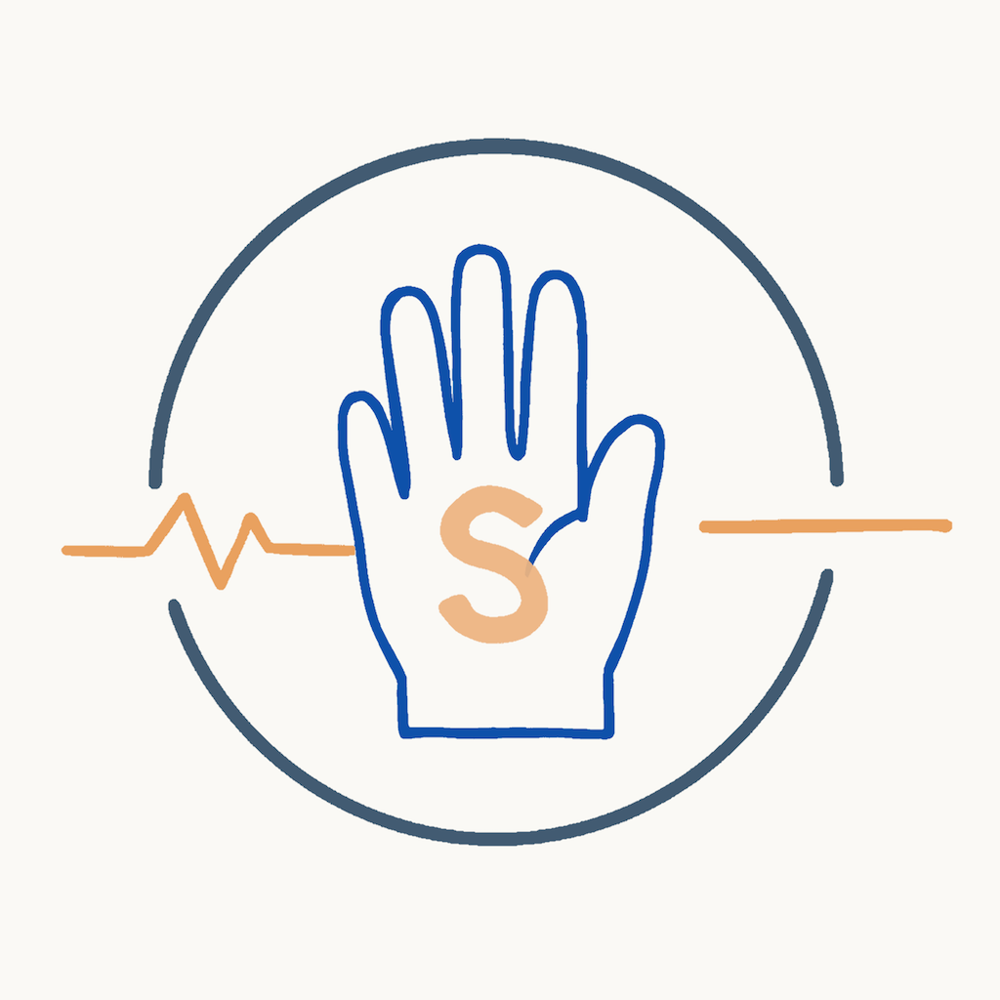
以主動抑震為基礎之帕金森氏症智慧型輔助系統（iOS App）
從帕金森氏症患者的日常手部震顫困擾出發，結合穿戴式智慧手套與 iOS 照護管理應用程式。 App 端採 SwiftUI 與 MVVM + Repository 分層架構，整合裝置連線與即時動作紀錄、 多劑型用藥與貼片輪替防呆流程、患者授權之雙角色照護協作、AI 對話代記助理「小安」， 以及可整理日常數據與摘要的 PDF 回診報告匯出功能。
帕金森氏症患者的肢體震顫常使拿杯子、吃飯、寫字等日常動作變得費力，逐漸影響生活自主與信心； 此外，震顫表現會隨用藥時間、情緒與日常活動波動，患者回診時卻往往只能靠記憶向醫師口述，難以在有限門診時間內完整說明近況。
為此，團隊規劃將穿戴式裝置量測與日常照護紀錄整合於同一套系統中，讓量測數值能與當時的活動情境、服藥時間與主觀感受互相對照，提供家屬協助管理與醫師回診參考。
支援口服、貼片與注射三種劑型排程與單次補登；針對穿皮貼片設計「舊貼片移除確認」、「12 處部位 14 天重複提醒」、「30 秒按壓倒數」與膚況照片紀錄，並提供服藥時間與震動強度對照圖。
區分佩戴者（Hoper）與照護者（Steadyer）雙角色介面，透過 6 位數時效性配對碼綁定；患者可分別開關「管理用藥排程」與「新增用藥紀錄」兩項獨立授權，安全掌握資料主導權。
整合穿戴手套連線狀態與電量顯示、配戴初期拉線長度設定及模式切換；資料頁提供簡易／標準顯示切換，並於量測紀錄補記休息、吃飯、寫字等活動情境與照片。
提供病患與家屬心情便箋（含僅照護者可見留言）、突發症狀照片／影片紀錄牆、血壓／血糖／體溫／體重與睡眠飲食登錄，以及 5 題快篩與 25 題綜合自評量表。
內建對話助理「小安」，可透過自然語言查詢近期用藥與健康紀錄，或在確認藥名、劑量與時間後直接代為建立用藥與生活留言紀錄（輔以知識庫向量檢索）。
回診前可選定日期區間與健康主題生成 AI 摘要草稿，供使用者親自核對與修改文字後，匯出包含趨勢圖表、用藥清單、生活紀錄與判讀規則附錄的完整 PDF 報告。
iOS 端採 View (SwiftUI) / ViewModel / Model & DTO / Repository / Service 分層架構，將介面狀態、資料存取抽象化、藍牙通訊與雲端 API 清楚分離。
| 類別 | 技術與工具 | 在專案中的實際用途 |
|---|---|---|
| App 前端與架構 | Swift、SwiftUI、MVVM + Repository | 建置所有 iOS 操作介面、雙角色權限狀態管理與資料存取抽象層 |
| 圖表與視覺呈現 | Swift Charts | 繪製震顫強度走勢圖、PSD 頻率分佈圖與服藥時間對照曲線 |
| 裝置通訊與訊號整合 | CoreBluetooth、Accelerate (vDSP) | 接收穿戴手套數據並整合裝置端分析與簡易／標準模式數值顯示 |
| 網路串接與資料壓縮 | URLSession (async/await)、Zlib | 帶入 JWT 與單一裝置會話驗證串接後端 API，並批次壓縮上傳感測數據 |
| PDF 醫療報告輸出 | HTML / SVG 樣板、WebKit / UIPrintPageRenderer | 將趨勢圖表、用藥清單、生活紀錄與 AI 摘要整合成可分享之 PDF 文件 |
| 後端與資料庫（團隊整合） | Vapor 4 (Swift 6.1)、Fluent、PostgreSQL (pgvector)、Docker / Render | 團隊後端組建置 RESTful API、資料持久化、OpenAI 對話摘要與 Resend 密碼重設 |
| 協作與介面測試 | Git / GitHub、Postman | 跨組分支合併與版本管理，以及登入、用藥、量測與 AI 端點測試驗證 |
問題：團隊成員皆為資管背景、未曾修習硬體課程，製作實體穿戴手套時遇到機構配置與 3D 列印耗時過長的問題，連帶影響軟體聯調進度。
解法：軟體端成員一同加入機構與穿戴方式的發想討論（如調整前臂支撐與拉線固定配置），並先以既有資料與模擬流程平行開發 App 功能，降低等待硬體造成的阻塞。
問題：身邊沒有帕金森氏症患者，初期無法完全掌握使用者的實際需求與用藥習慣，容易遺漏實務細節。
解法：投入大量時間查閱醫療衛教資料與病友照護資源（如巴金森寶典），才發覺用藥不只有口服，還包含貼片與注射劑型，進而補足貼片部位輪替提醒、生活情境補記與回診準備等功能。
問題：初期設計未開放照護者修改資料，但考量患者實際使用時可能因手部震顫不便自行輸入，完全鎖定反而增加使用門檻。
解法：與後端溝通調整權限設計，改為由患者（Hoper）在 App 內主動控制照護者（Steadyer）權限，分別開關「管理用藥排程」與「新增用藥紀錄」，並由後端每次請求即時核對授權。
問題：若介面未區分狀態來源，使用者易將「藍牙未連線」誤認成手套故障，或把裝置回傳的馬達命令標記（motor_enabled）誤以為是硬體已成功抑震；網路失敗時也容易誤判資料已保存。
解法：將狀態提示明確拆分為「裝置、分析、網路」三類，無可靠數據時保留 -- 不補零、同步失敗保留原內容供重試，並在介面與報告說明中明確標註馬達標記僅代表命令狀態而非醫療成效。
本專題為 6 人跨組協作成果（涵蓋機構硬體、演算法與 App／後端），以下明確區分個人在 iOS App 端的實際負責內容與其他組員分工：
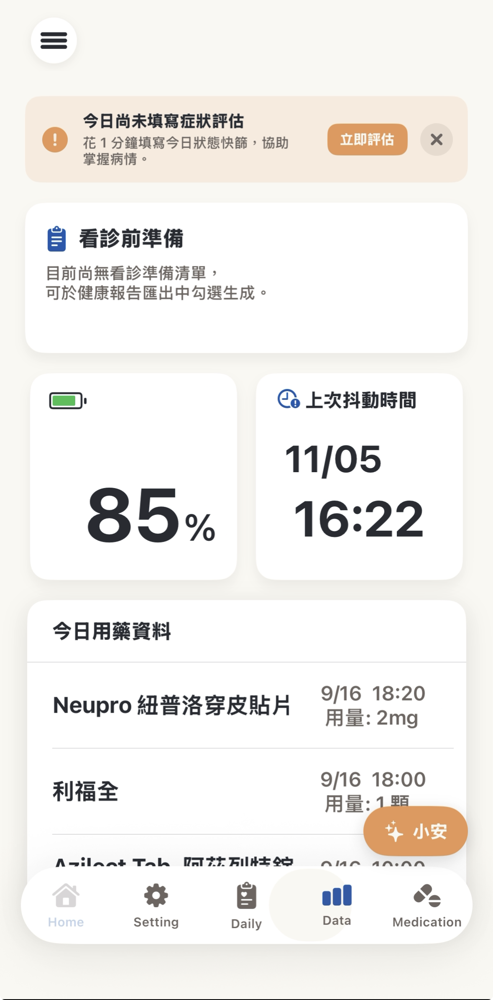
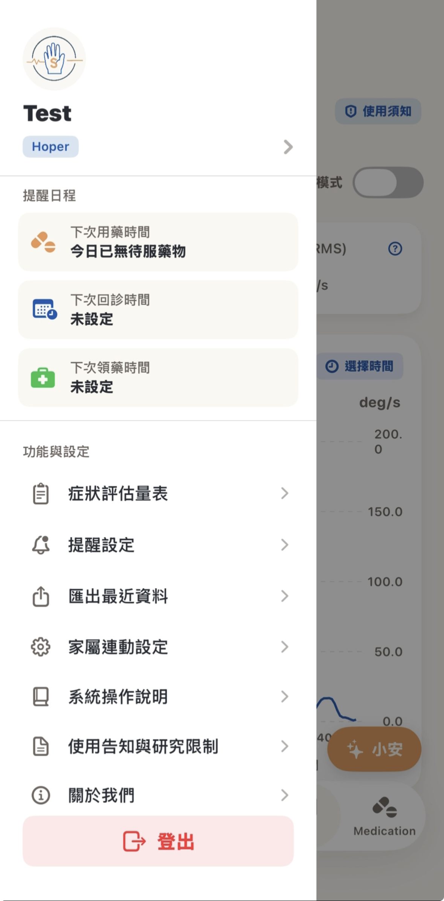
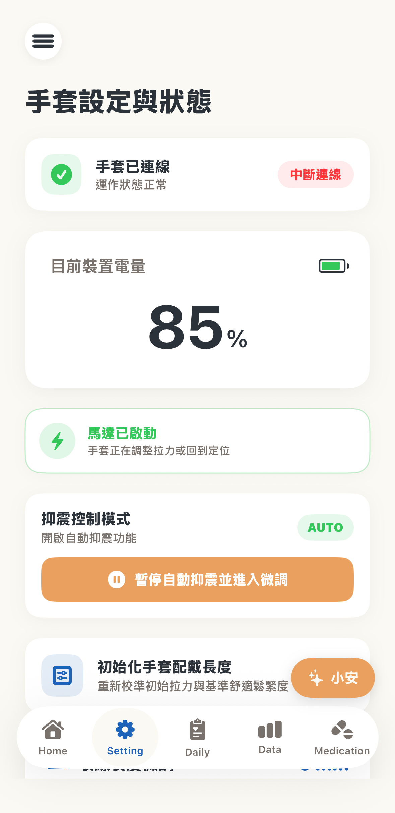
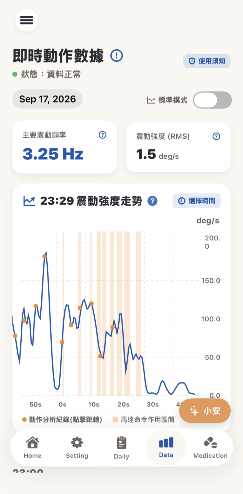
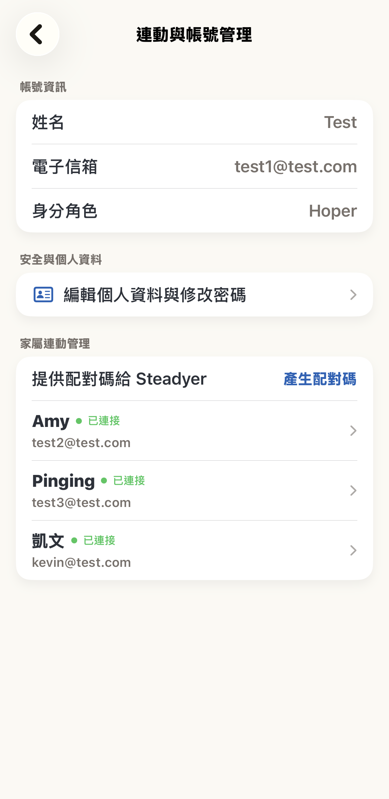
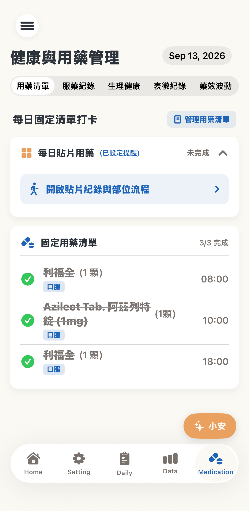
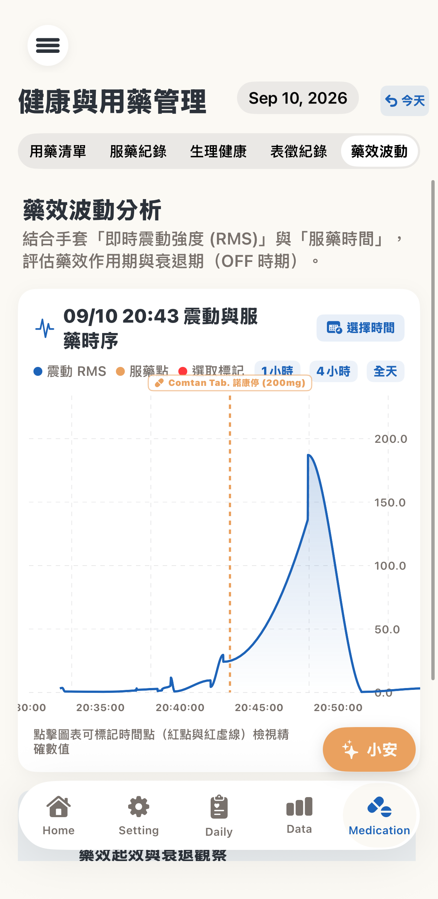
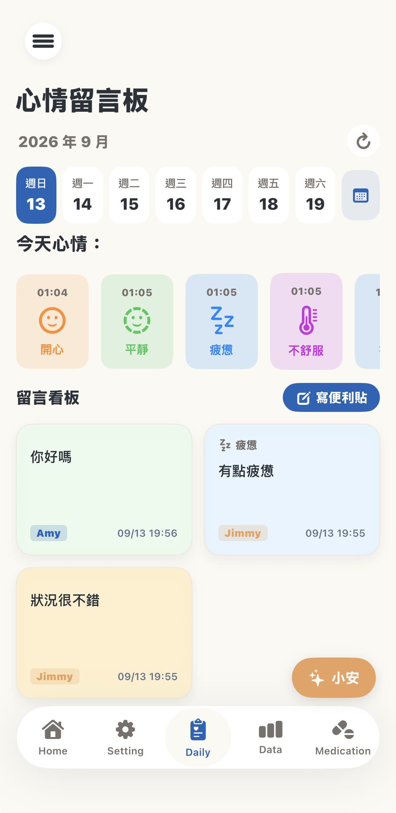
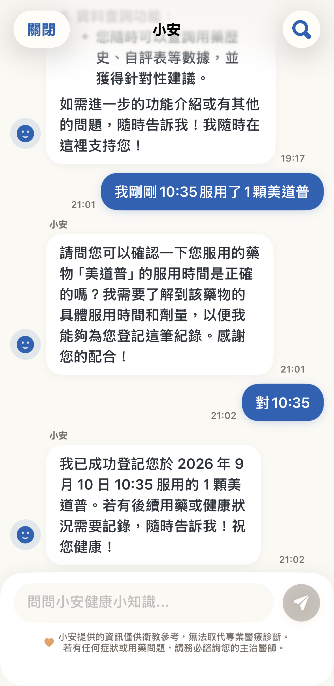
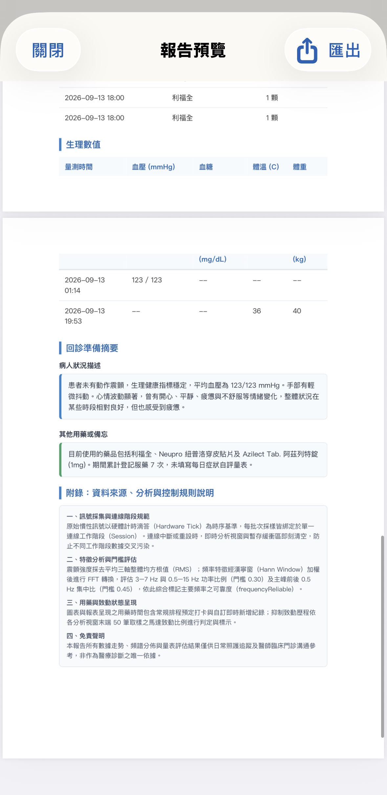
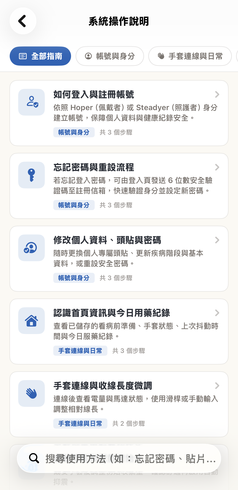
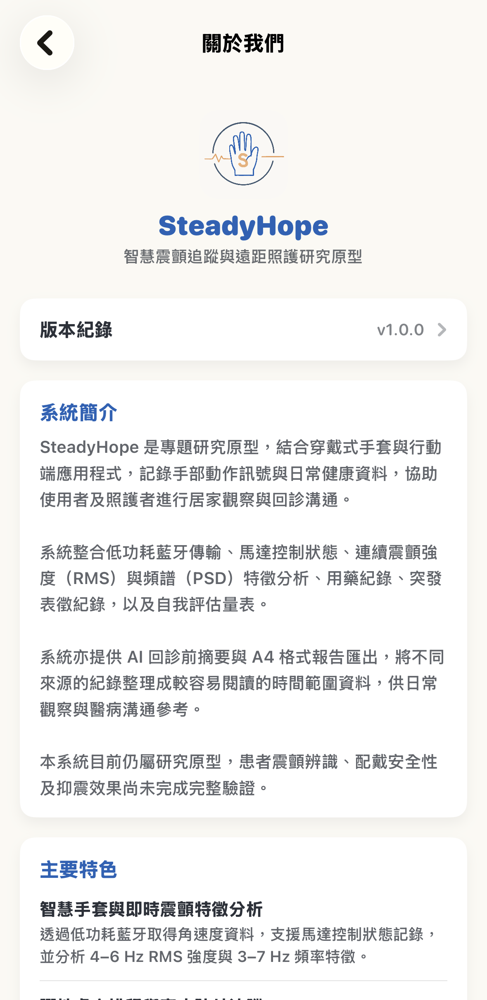